Mall of Mysore
The Mall of Mysore is a popular shopping destination in Mysore, offering a wide range of retail outlets, entertainment options, and dining choices. With its modern design and convenient location, it attracts both locals and tourists. Visitors to the Mall of Mysore can explore multiple floors filled with diverse stores, featuring national and international brands for fashion, electronics, home decor, and more. It caters to a variety of shopping preferences, ensuring a satisfying experience for everyone.
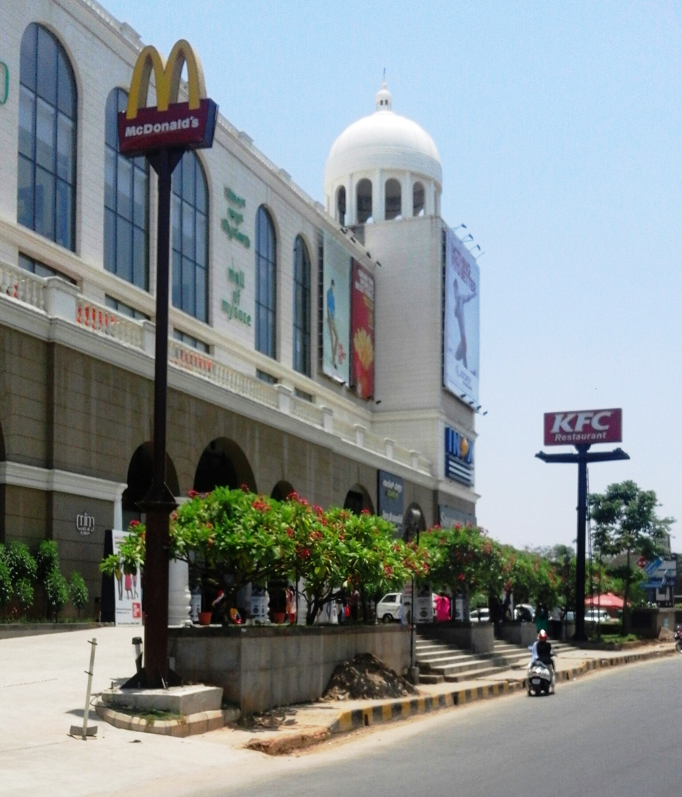In addition to shopping, the mall provides entertainment for all ages, including a multiplex cinema, gaming arcades, and a play zone for children. Live performances and events add to the vibrant atmosphere, enhancing the overall experience. Food enthusiasts have numerous options to choose from with the mall's variety of restaurants, cafes, and fast-food chains, serving different cuisines. Whether it's a quick bite or a leisurely meal, the Mall of Mysore offers a diverse dining experience.
In summary, the Mall of Mysore is a popular shopping complex in Mysore, known for its diverse retail options, entertainment facilities, and dining choices. Its modern design, convenient location, and lively ambiance make it a favored destination for shoppers and visitors alike.
DRC Cinemas
DRC Cinemas in Mysore is a popular movie theater chain known for its modern facilities and diverse movie selection. With convenient locations throughout the city, it offers a comfortable and enjoyable cinematic experience for both locals and tourists.
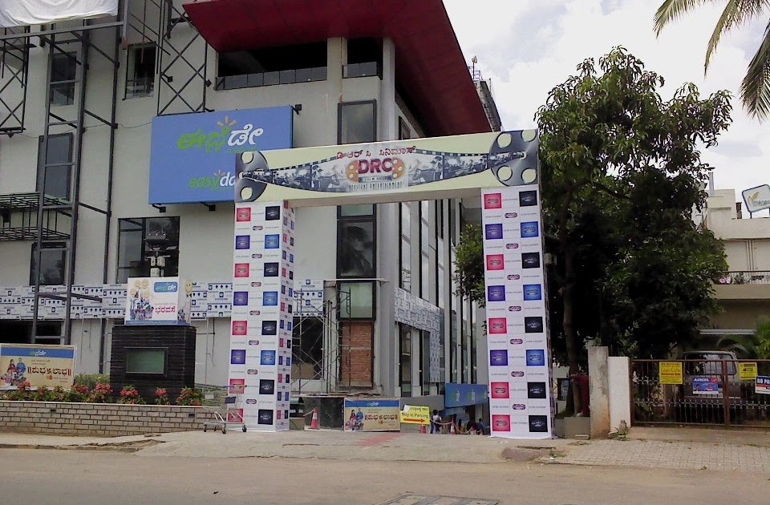The theaters at DRC Cinemas provide a relaxed and immersive environment, with spacious seating and high-quality audiovisual systems. Visitors can expect a wide range of movies, including the latest blockbusters and regional films, catering to various preferences. DRC Cinemas is a favored entertainment destination in Mysore, providing a break from the city's hustle and bustle. With well-maintained facilities and a friendly staff, it offers a pleasant movie-watching experience for movie enthusiasts of all ages.
Mysore Silk Saree Shops
Mysore Silk Saree Shops in Mysore are renowned for their exquisite silk sarees, deeply rooted in the city's cultural heritage. These sarees are known for their opulent designs, vibrant colors, and luxurious feel, crafted with meticulous attention to detail.
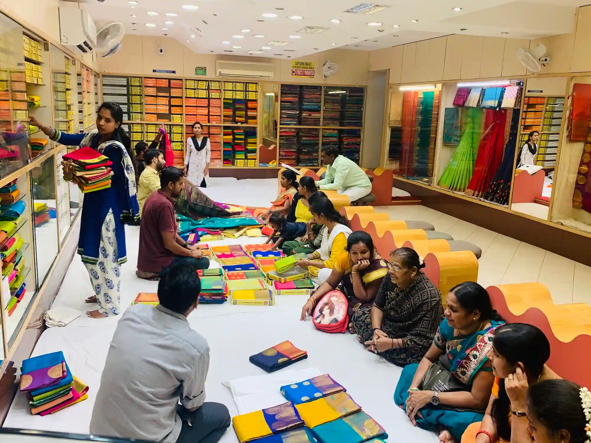Visitors can explore various silk saree shops throughout the city, offering a wide range of Mysore silk sarees to suit different tastes and occasions. From traditional patterns to contemporary designs, these shops provide a delightful shopping experience, allowing shoppers to immerse themselves in the world of traditional textiles. In addition to sarees, Mysore Silk Saree Shops often showcase other silk products and accessories, including stoles, scarves, shawls, and fabrics. The knowledgeable staff is available to assist visitors in selecting the perfect saree, sharing insights into the craftsmanship and cultural significance behind each piece.
 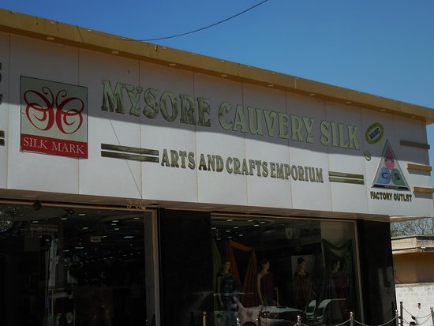
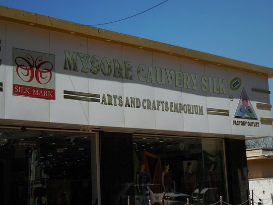
Mysore Silk Saree Shops are popular among locals and tourists alike, as these sarees make cherished souvenirs, elegant attire for special occasions, or valuable additions to any saree collection. By visiting these shops, visitors can appreciate the beauty of Mysore silk and take home a piece of the city's rich cultural heritage.
Guru Sweet Mart
Guru Sweet Mart in Mysore is a renowned establishment known for its high-quality traditional Indian sweets and snacks. With a history spanning several decades, it has earned a reputation for its delectable offerings. The sweet mart offers a wide variety of mouthwatering sweets prepared using traditional recipes and the finest ingredients. From classic favorites like laddoos and burfis to regional specialties, visitors can indulge in a diverse range of sweet delicacies crafted with expertise and care.
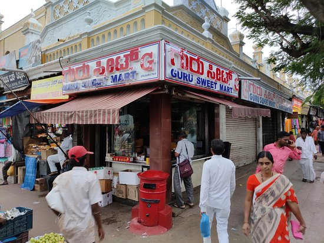Alongside sweets, Guru Sweet Mart also provides an assortment of savory snacks, including samosas, murukkus, and namkeens. The flavorsome snacks are perfect for satisfying cravings and offer a delightful balance of spices and textures. Guru Sweet Mart takes pride in its commitment to quality and hygiene, ensuring that the sweets and snacks are prepared in a clean and hygienic environment. This dedication to excellence has made it a popular destination for both locals and tourists seeking authentic Indian sweets and snacks in Mysore.
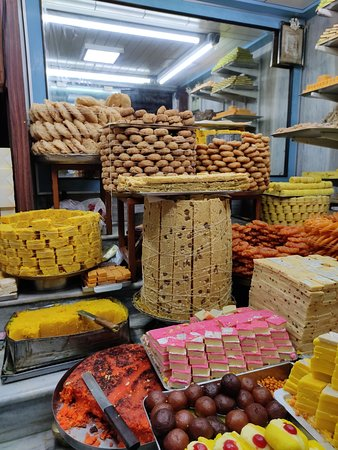Devaraja Market
Devraja Market, located in Mysore, is a historic and bustling marketplace that attracts both locals and tourists. Established in the late 19th century, it was named after Maharaja Krishnaraja Wadiyar III, reflecting his royal title "Devaraja." The market's architectural beauty combines Indian and European influences, featuring intricate carvings, arches, and pillars.
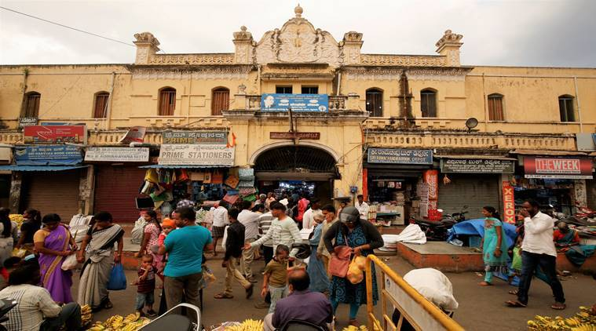Devraja Market is renowned for its diverse range of products. Visitors can find fresh fruits, vegetables, spices, flowers, and culinary delights, alongside traditional handicrafts, textiles, jewelry, and religious artifacts. The vibrant flower market, in particular, offers a captivating sight with its colorful displays of marigolds, roses, jasmine, and more. More than just a commercial hub, Devraja Market is a cultural melting pot. It provides an immersive experience into the local way of life, allowing visitors to interact with friendly vendors and embrace Mysore's traditional culture. The market buzzes with activity, especially during festivals and special occasions, offering a lively and vibrant atmosphere.
Sandal Oil Factory
The Sandal Oil Factory in Mysore is a renowned establishment known for its production of sandalwood oil. Located in the heart of the city, it utilizes traditional and modern techniques to extract the precious oil from sandalwood trees. Skilled craftsmen at the factory carefully process sandalwood logs, preserving the distinct aroma and therapeutic properties of the oil through a meticulous distillation process. This expertise has made Mysore synonymous with high-quality sandalwood oil.
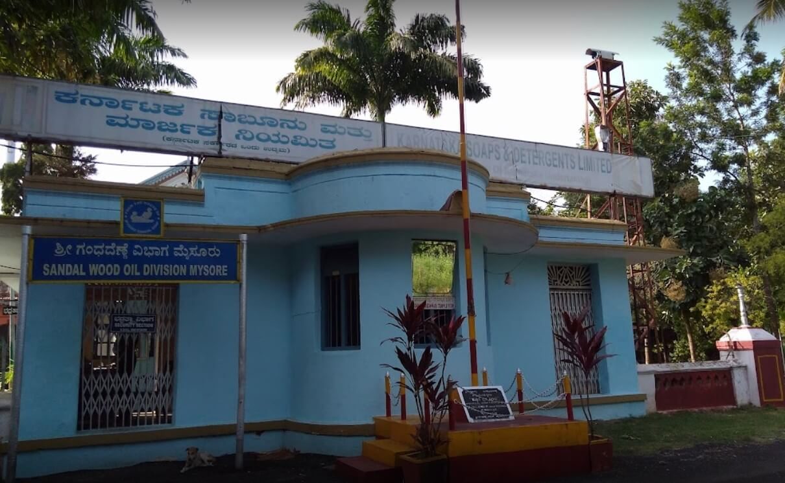The factory holds historical and cultural significance as sandalwood has been an integral part of Mysore's heritage for centuries. Sandalwood oil is widely used in perfumes, cosmetics, and traditional Ayurvedic practices. It is also considered sacred and used in religious rituals. Visitors to the Sandal Oil Factory can witness the fascinating process of sandalwood oil extraction and learn about its significance in Mysore's history and culture. Guided tours may be available, providing insights into the craftsmanship and techniques involved in producing this precious oil.
In summary, the Sandal Oil Factory in Mysore is a notable establishment specializing in the production of sandalwood oil. With its traditional methods, cultural significance, and guided tours, it offers visitors a unique opportunity to explore the world of sandalwood and appreciate its rich heritage.
Ashoka Road
Ashoka Road in Mysore is a historically significant and bustling thoroughfare. It is named after Emperor Ashoka and is known for its colonial-era architecture, lively markets, and iconic landmarks. The road serves as a vibrant commercial hub with a wide range of shops, restaurants, and businesses. Visitors can explore diverse retail outlets offering traditional handicrafts, textiles, modern fashion, and electronics.
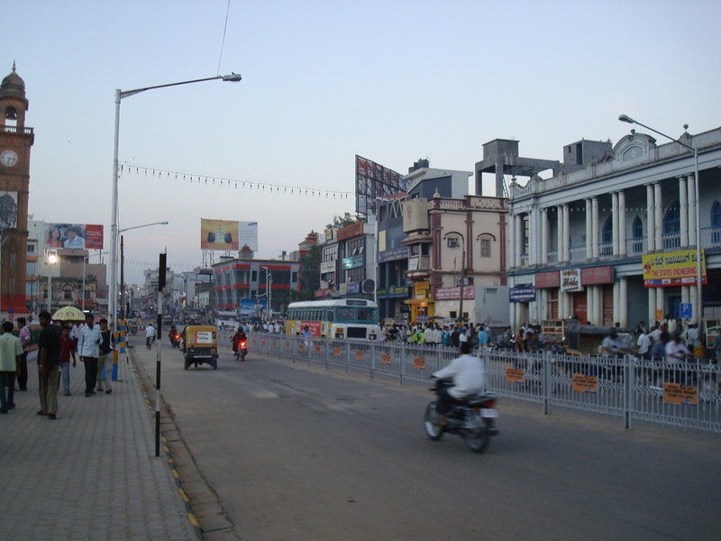Ashoka Road is home to notable landmarks such as the magnificent Mysore Palace, also known as the Amba Vilas Palace. This architectural marvel showcases the city's royal heritage and attracts tourists worldwide. The road also leads to the Jaganmohan Palace and Art Gallery, which houses a rich collection of art and artifacts. Adjacent to Ashoka Road, the Devaraja Market is a bustling market famous for its fresh produce, spices, flowers, and traditional handicrafts. The blend of old-world charm and modern amenities along Ashoka Road creates a vibrant atmosphere, attracting both locals and tourists.
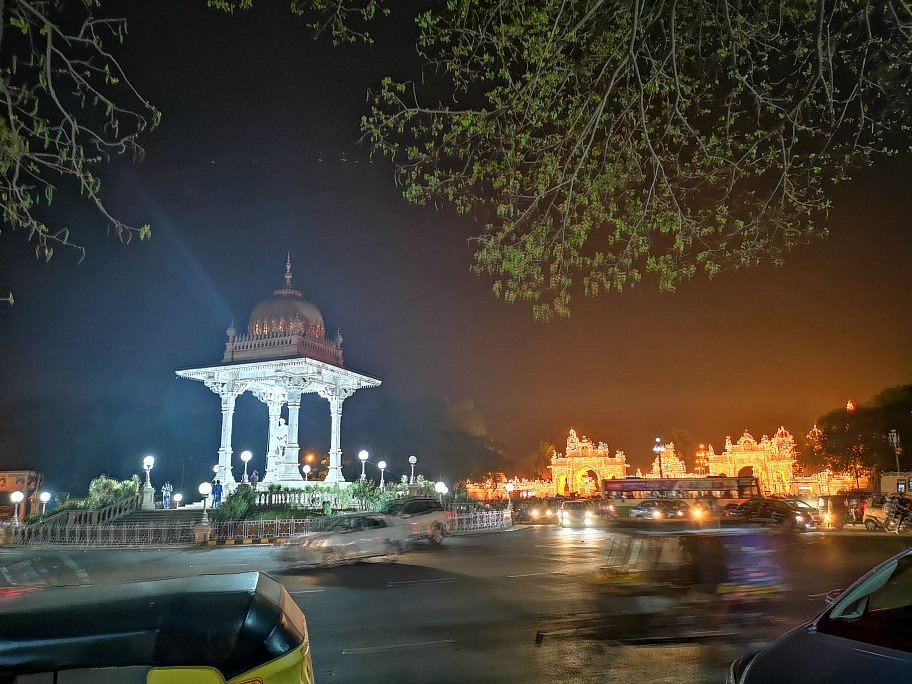